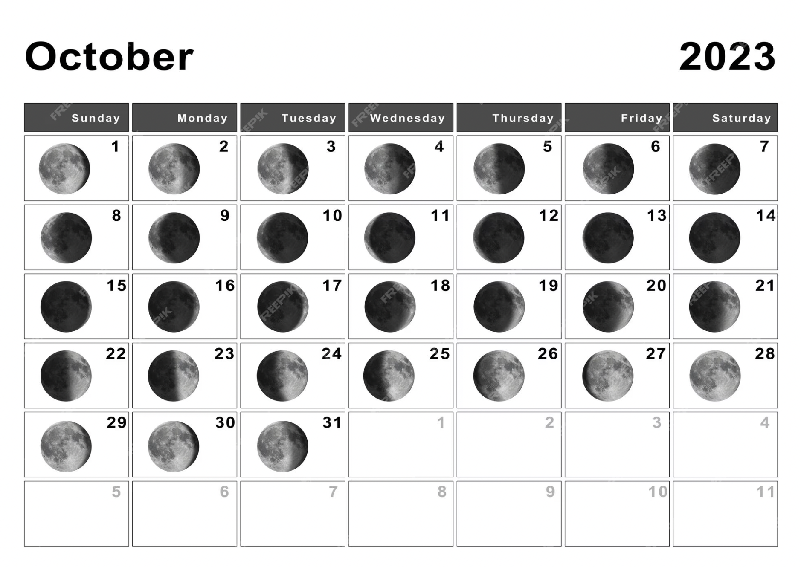
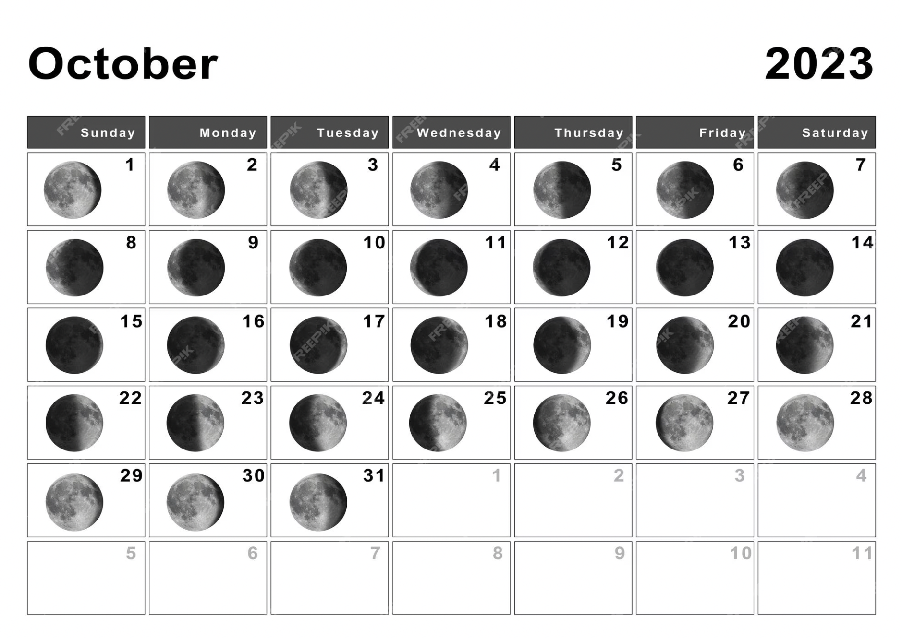

Conocé el calendario lunar
Es importante saber como transita la luna día a día a través de los signos. Te puede indicar cuando iniciar un proyecto, o cuando finalizar. También te dice cuando tomar todo con más calma.



Es importante saber como transita la luna día a día a través de los signos. Te puede indicar cuando iniciar un proyecto, o cuando finalizar. También te dice cuando tomar todo con más calma.
